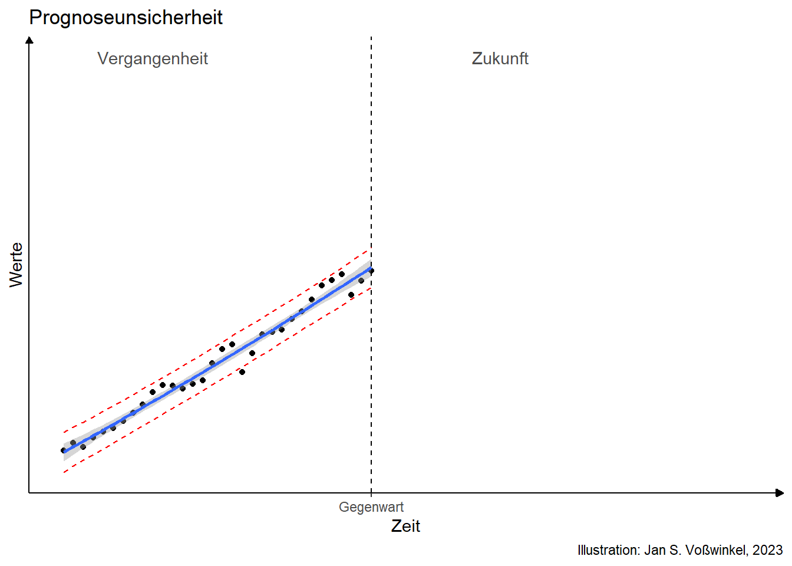

2 Zukunft
Niemand hat je die Zukunft gesehen
aber alle erwarten, dass es sie gibt
\(\rightarrow\) Sie rechnen damit, heute nach Hause zu kommen, oder?

- Beobachtungen der Vergangenheit
- Regelmäßiger Prozess
- Erkennbarer Trend

- Wie geht es weiter?

Die Zukunft ist ungewiss
Selbst bei Fortschreibung der Gegenwart hohe Unsicherheit in fernerer Zukunft
Noch höhere Unsicherheit bei Strukturbrüchen
Zukunft hängt ab von
- eigenen Entscheidungen und
- Entscheidungen anderer
\(\rightarrow\) Ökonomische Analyse sozialer Phänomene